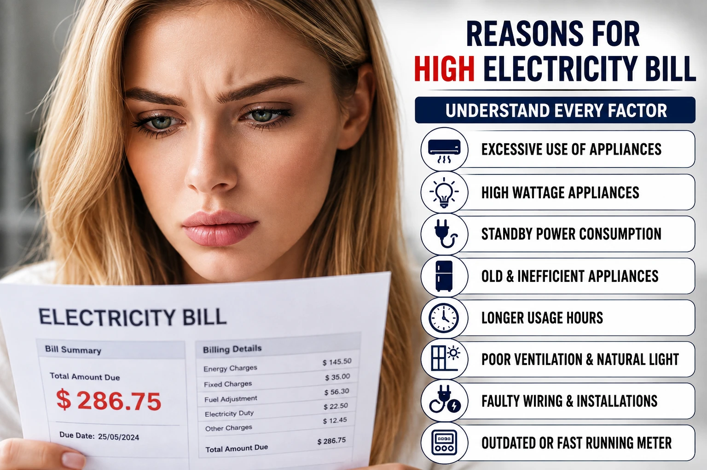

परिचय
दरमहा येणारे वीज बिल हा प्रत्येक कुटुंबाच्या बजेटमधील एक महत्त्वाचा भाग असतो. मात्र, अनेकदा विजेचा वापर नेहमीसारखाच असूनही बिल अचानक वाढून येते. अशा वेळी महावितरणच्या यंत्रणेला दोष देण्यापूर्वी, घरातील उपकरणांचा वापर, वायरिंगची स्थिती आणि आपल्या नकळत होणाऱ्या चुका समजून घेणे आवश्यक आहे. या लेखात आपण वीज बिल वाढण्यामागची सर्व मुख्य कारणे सविस्तर पाहणार आहोत.
वीज बिल वाढण्यामागील नेमकं गणित काय आहे?
Key Takeaways
- वाढलेला थेट वापर, प्रलंबित थकबाकी आणि स्लॅब सिस्टममधील बदल ही वीज बिल वाढण्याची प्रमुख तांत्रिक कारणे आहेत.
वीज बिलाची अंतिम रक्कम केवळ एका घटकावर ठरत नाही, तर त्यामागे महावितरणचे एक ठरलेले गणित असते. हे तांत्रिक गणित समजल्यास आपल्याला बिल नियंत्रित करणे सोपे जाते.
- 1 अधिक वीज वापर म्हणजे जास्त बिल: घरातील उपकरणांचा वाढलेला वापर हा थेट युनिट्स वाढवतो. जितके युनिट्स जास्त तितकी बिलाची मूळ रक्कम वाढते.
- 2 प्रलंबित थकबाकी म्हणजे वीज बिलात अतिरिक्त वाढ: मागील महिन्याचे बिल वेळेत न भरल्यास त्यावर विलंब आकार (Delayed Payment Charges) आणि व्याज आकारले जाते, ज्यामुळे पुढील बिल अव्वाच्या सव्वा दिसते.
- 3 स्लॅब सिस्टम वीज बिलाची रक्कम वाढवू शकते: महावितरणची दररचना स्लॅब सिस्टमवर (उदा. 0 ते 100 युनिटचा पहिला स्लॅब, 101 ते 100 युनिटचा दुसरा स्लॅब) आधारित असते. तुमचा वापर पुढील स्लॅबमध्ये गेल्यास प्रति युनिटचा दर खूप जास्त वाढतो.
- 4 वीज बिल वाढण्याची अतिरिक्त कारणे: यामध्ये इंधन समायोजन आकार (Fuel Adjustment Costs), वीज शुल्क आणि चुकीच्या मीटर रीडिंगमुळे दोन ते तीन महिन्यांचे एकत्रित बिलणे अशा कारणांचा समावेश होतो.
तुम्हाला वीज बिल वाढण्यामागचे हे गणित समजले का?
उन्हाळा आणि हिवाळ्यात वीज बिल का वाढतं?
Key Takeaways
- हवामानातील तीव्र बदलांमुळे कुलिंग आणि हीटिंग उपकरणांचा वापर वाढतो, जो थेट स्लॅब रेट बदलण्यास कारणीभूत ठरतो.
ऋतूनुसार आपल्या घरातील विजेचा वापर मोठ्या प्रमाणावर बदलतो, आणि त्याचा थेट फटका बिलावर बसतो.
- 1 तापमानातील तीव्र बदल आणि त्याचा विजेच्या वापरावर परिणाम: उन्हाळ्यात अतिउष्णतेमुळे आणि हिवाळ्यात अतिथंडीमुळे शरीराला आराम देण्यासाठी इलेक्ट्रॉनिक उपकरणांवर अवलंबून राहावे लागते.
- 2 कुलिंग आणि हीटिंग उपकरणांचा वाढता वापर:
| ऋतू / हंगाम | वापरातील उपकरणे | बिलावरील थेट परिणाम |
|---|---|---|
| उन्हाळा (Summer) | एअर कंडिशनर्स (AC), कुलर्स, हायस्पीड फॅन्स | AC च्या कंप्रेसरवर ताण आल्याने वीज वापर दुप्पट होतो. |
| हिवाळा (Winter) | इलेक्ट्रिक गीझर्स, रूम हीटर्स, वॉटर हीटर्स | पाणी गरम करण्यासाठी आणि खोली उबदार ठेवण्यासाठी प्रचंड ऊर्जा लागते. |
- 3 सुट्टीचा काळ आणि सणांचा हंगाम आणि त्यासोबत वाढणारे वीज बिल: सुट्ट्यांमध्ये पाहुणे आणि लहान मुले घरी असल्याने टीव्ही, संगणक जास्त चालतात. तसेच सणांच्या काळात केली जाणारी रोषणाई आणि डेकोरेशनमुळे बिलात मोठी भर पडते.
बदलत्या ऋतूमध्ये तुम्ही तुमचा वीज वापर तपासता का? आम्हाला नक्की सांगा.
घरातील अशी उपकरणे जी सर्वाधिक वीज वापरतात?
Key Takeaways
- प्रचंड वॅटेज असणारी हीटिंग आणि हेवी मोटर आधारित उपकरणे घरातील वीज बिलाचा सर्वाधिक भाग व्यापतात.
घरातील प्रत्येक उपकरणाची वीज खाण्याची क्षमता वेगळी असते. काही उपकरणे कमी वेळेत देखील जास्त विजेचा वापर करतात. त्यांची यादी खालीलप्रमाणे आहे:
- इलेक्ट्रिक गीझर: पाण्याचा गीझर साधारणपणे 1500 ते 3000 वॅटचा असतो. तो जास्त वेळ चालू ठेवल्यास प्रती तास 1.5 ते 3 युनिट खर्च करतो.
- रेफ्रिजरेटर: फ्रिज सामान्यतः 24 तास चालू राहतो, त्याची अंतर्गत रचना आणि दरवाजाची वारंवार होणारी उघडझाक यामुळे देखील जास्त प्रमाणामध्ये ऊर्जा खर्च होते.
- वॉशिंग मशीन: विशेषतः वॉटर हीटर मोडवर वॉशिंग मशीन चालवल्यास विजेचा वापर कमालीचा वाढतो.
- टेलिव्हिजन: जुने CRT किंवा मोठे प्लाझ्मा टीव्ही तासनतास चालू राहिल्यास जास्त वीज वापरतात.
- इलेक्ट्रिक इस्त्री: कपडे कडक करण्यासाठी वापरली जाणारी इस्त्री 1000 ते 1500 वॅटची असते, ज्यामुळे झपाट्याने रीडिंग वाढते.
- संगणक आणि लॅपटॉप: वर्क फ्रॉम होम किंवा गेमिंग पीसी सतत चालू राहिल्याने ऊर्जेचा वापर जास्त होतो.
- पाण्याची मोटर: विहीर किंवा बोअरवेलमधून पाणी उपसणारी मोटर अकार्यक्षम असल्यास जास्त अँपिअर घेऊन वीज बिल वाढवते.
- इतर उपकरणे: मायक्रोवेव्ह ओव्हन, इंडक्शन कुकर, आणि जुने मिक्सर देखील या श्रेणीत येतात.
तुमच्या घरात यापैकी कोणती उपकरणे जास्त वेळ चालतात?
जुन्या वायरिंगचा परिणाम किती मोठा असू शकतो?
Key Takeaways
- दोषपूर्ण आणि जुने वायरिंग न वापरलेल्या विजेचेही बिल वाढवते आणि सुरक्षेसाठी धोकादायक ठरते.
अनेकदा आपण उपकरणांवर लक्ष ठेवतो, पण भिंतींच्या आत असलेल्या वायरिंगकडे दुर्लक्ष करतो. जुने वायरिंग हे छुपे वीज बिल वाढवणारे मोठे कारण आहे.
- 1 जुन्या वायरिंगमुळे होणारा पॉवर लॉस: काळाच्या ओघात तारांची वहन क्षमता कमी होते, ज्यामुळे वीज उष्णतेच्या स्वरूपात वाया जाते.
- 2 लीकेज करंट (न वापरलेली वीज): वायर्सचे इन्सुलेशन खराब झाल्यास करंट भिंतींमध्ये किंवा अर्थिंगमध्ये लीक होतो. यामुळे उपकरणे बंद असली तरी मीटर फिरत राहते.
- 3 कॉपर ऑक्सिडेशन आणि वायरिंग कार्यक्षमतेतील घट: तांब्याच्या तारांवर आलेल्या ओलाव्यामुळे किंवा हवेमुळे गंज (Oxidation) चढतो, ज्यामुळे रेझिस्टन्स वाढतो.
- 4 भिंतींमधील शॉर्ट सर्किटमुळे वाढणारी मीटर रीडिंग: सूक्ष्म पातळीवरील शॉर्ट सर्किट (Micro Short Circuits) उपकरणांना ट्रिप न करता वीज खेचत राहतात.
- 5 जुन्या तारांतील रेझिस्टन्सचा वीज वापरावर परिणाम: वाढलेल्या रेझिस्टन्समुळे उपकरणांना काम करण्यासाठी जास्त ऊर्जा घ्यावी लागते, पर्यायाने बिल वाढते.
तुमच्या घराचे वायरिंग 10 वर्षांपेक्षा जास्त जुने आहे का?
नकळतच्या छोट्या सवयी कशा वाढवतात वीज बिल?
Key Takeaways
- दैनंदिन जीवनातील छोट्या आणि निष्काळजीपणाच्या सवयी महिन्या अखेरीस बिलाची रक्कम वाढवण्यात मोठी भूमिका बजावतात.
आपल्या रोजच्या काही सवयी विजेचा अपव्यय करतात, ज्याकडे आपले सहसा लक्ष जात नाही:
- 1 अनावश्यकपणे दिवे चालू ठेवण्याची सवय: खोलीतून बाहेर पडताना पंखे आणि लाईट्स बंद न केल्याने अनावश्यकपणे वीज जळत राहते.
- 2 चार्जर सतत प्लगमध्ये कनेक्ट ठेवण्याची चूक: मोबाईल नसतानाही चार्जर ऑन ठेवल्यास ते अंतर्गत ट्रान्सफॉर्मरमुळे सूक्ष्म प्रमाणात ऊर्जा घेत राहते.
- 3 फ्रीज वारंवार उघडण्याची सवय: फ्रिजचा दरवाजा वारंवार उघडल्याने आतील थंड हवा बाहेर पडते आणि कंप्रेसरला तापमान राखण्यासाठी पुन्हा डबल काम करावे लागते.
- 4 स्टँडबाय मोडमध्ये चालू राहणारे टीव्ही आणि सेट टॉप बॉक्स: रिमोटने टीव्ही बंद केला तरी मुख्य स्विच ऑन असल्यास वीज वापर सुरूच असतो.
- 5 जुनी आणि कमी कार्यक्षम उपकरणे वापरण्याचे परिणाम: जुने पंखे किंवा मिक्सर जास्त जड अवस्थेत फिरतात आणि नवीन उपकरणांपेक्षा दीडपट वीज खातात.
- 6 एलईडी ऐवजी जुन्या पारंपरिक बल्बचा वापर: जुने 100 वॅटचे बल्ब आधुनिक 9 वॅटच्या LED पेक्षा तब्बल 11 पट जास्त वीज वापरतात.
- 7 इलेक्ट्रॉनिक उपकरणांची अयोग्य मांडणी: फ्रिज थेट सूर्यप्रकाशात किंवा भिंतीला खेटून ठेवल्यास त्याची हवा खेळती राहत नाही आणि वीज जास्त लागते.
- 8 वीज उपकरणांची स्टार रेटिंग तपासण्याकडे दुर्लक्ष: खरेदी करताना 01 स्टार किंवा बिना रेटिंगचे उपकरण स्वस्त मिळते खरे, पण ते आयुष्यभर जास्त बिल काढून वसूल करते.
यातील कोणती सवय तुमच्या घरात पाळली जाते?
स्टँडबाय मोडमुळे वीज बिलात कशी वाढ होते?
Key Takeaways
- फँटम लोड म्हणजेच उपकरणांचा स्टँडबाय मोड हा संपूर्ण बिलाच्या 8 ते 10 टक्के हिस्सा व्यापू शकतो.
उपकरणे प्रत्यक्ष बंद असूनही चालू राहणाऱ्या या वीज वापराबद्दल सविस्तर माहिती करून घेऊया.
1. स्टँडबाय मोड म्हणजे नेमकं काय?
जेव्हा आपण एखादे उपकरण रिमोटने किंवा सॉफ्टवेअरद्वारे बंद करतो, परंतु त्याचा मुख्य बोर्डावरील प्लग चालू असतो, तेव्हा ते उपकरण पूर्णपणे बंद न होता निद्रावस्थेत (Sleep Mode) असते. यालाच स्टँडबाय मोड म्हणतात.
2. स्टँडबाय मोडमध्ये सर्वाधिक वीज खाणारी 5 उपकरणे:
- स्मार्ट टीव्ही आणि सेट टॉप बॉक्स
- एअर कंडिशनर्स (AC) चे रिमोट सेन्सर पॅनेल
- मायक्रोवेव्ह ओव्हन (डिजिटल घड्याळ चालू असते)
- वाय फाय राउटर (रात्रभर न वापरता चालू असणारे)
- गेमिंग कन्सोल आणि ऑडिओ सिस्टीम
3. फँटम लोड अर्थात अदृश्य वीज वापर:
याला व्हॅम्पायर पॉवर असेही म्हणतात. हे उपकरणांमधील सेन्सर्स, डिस्प्ले घड्याळे आणि अंतर्गत मेमरी जिवंत ठेवण्यासाठी सतत चालू राहणारी अदृश्य वीज आहे. हे एका उपकरणाचे कमी वाटले, तरी घरातील सर्व उपकरणे मिळून मोठे युनिट तयार करतात.
4. केस स्टडी: परगावी राहणाऱ्या कुटुंबाला आलेले वीज बिल:
पुण्यातील एक कुटुंब 1 महिना घराला कुलूप लावून परगावी गेले होते. त्यांनी घरातील सर्व दिवे, फ्रिज बंद केले होते, परंतु घरातील वाय फाय राउटर, एसी आणि टीव्हीचे मुख्य स्विचेस चालूच ठेवले होते. ते परत आल्यावर त्यांना तब्बल 45 युनिट्सचे बिल आले. चौकशीअंती सिद्ध झाले की, हे बिल केवळ उपकरणांच्या स्टँडबाय मोड आणि फँटम लोडमुळे आले होते.
आता तरी तुम्ही मुख्य स्विचवरून उपकरणे बंद कराल ना?
अर्थिंग योग्य नसेल तर होऊ शकते जीवित आणि आर्थिक नुकसान.
Key Takeaways
- दोषपूर्ण अर्थिंगमुळे केवळ विजेचा अपव्यय होऊन बिल वाढत नाही, तर तो अत्यंत गंभीर सुरक्षेचा धोका निर्माण करतो.
घरातील वीज पुरवठ्यामध्ये अर्थिंग हा सर्वात महत्त्वाचा परंतु तितकाच दुर्लक्षित केलेला भाग आहे.
1. अर्थिंग म्हणजे नेमके काय?
इलेक्ट्रॉनिक उपकरणांच्या धातूच्या बॉडीमधून किंवा वायरिंगमधून लीक होणारा अतिरिक्त करंट सुरक्षितपणे जमिनीत वाहून नेण्यासाठी केलेली तांत्रिक व्यवस्था म्हणजे अर्थिंग होय.
2. घर किंवा इमारतीत अर्थिंग का अत्यावश्यक आहे?
योग्य अर्थिंग नसेल तर तो लीक झालेला करंट उपकरणाला हात लावताच माणसाला तीव्र शॉक बसवू शकतो. तांत्रिकदृष्ट्या, जेव्हा करंट जमिनीत जाण्याऐवजी सिस्टीममध्येच अडकून राहतो, तेव्हा मीटर देखील तो अतिरिक्त लोड नोंदवतो, ज्यामुळे आर्थिक भुर्दंड बसतो आणि उपकरणे जळण्याचा धोका वाढतो.
तुमच्या घराचे अर्थिंग तुम्ही तपासून घेतले आहे का?
महत्त्वाचे निष्कर्ष
अवाजवी वीज बिलामागे केवळ बाह्य तांत्रिक कारणे नसून, जुनी वायरिंग आणि फँटम लोड हे छुपे मोठे कारक असतात.
योग्य स्टार रेटेड उपकरणांचा वापर आणि मुख्य स्विचवरून वीज पुरवठा बंद करण्याची सवय महिन्याकाठी 10 ते 15 टक्क्यांपर्यंत बिल कमी करू शकते.
घराची सुरक्षा आणि आर्थिक भुर्दंड टाळण्यासाठी नियमित अंतराने अर्थिंग आणि वायरिंग इलेक्ट्रिशियनकडून तपासून घेणे आवश्यक आहे.
People Also Ask
जेव्हा उपकरणे मुख्य स्विचवरून बंद न करता फक्त रिमोटने बंद केली जातात, तेव्हा ती स्टँडबाय मोड मध्ये असतात. यालाच फँटम लोड म्हणतात, ज्यामुळे उपकरणे बंद असतानाही सतत वीज वापर करत राहतात.
होय, जुन्या वायरिंगमध्ये रेझिस्टन्स वाढतो तसेच इन्सुलेशन खराब झाल्याने करंट भिंतींमध्ये लीक होतो. यामुळे उपकरणांचा वापर नसतानाही मीटर वेगाने फिरते आणि बिल वाढते.
महावितरणचे दर वीज वापराच्या स्लॅबवर (उदा. 0-100, 101-200) ठरतात. तुमचा वीज वापर नेहमीपेक्षा थोडा जरी वाढून पुढील स्लॅबमध्ये गेला, तर त्यापुढील सर्व युनिट्ससाठी प्रति युनिट जास्त दर आकारला जातो.
तांत्रिकदृष्ट्या, जेव्हा घरातील उपकरणांमधून वीज लीक होते आणि योग्य अर्थिंग नसल्यामुळे ती सिस्टीममध्येच अडकून राहते, तेव्हा मीटर त्या लीक करंटला अतिरिक्त लोड म्हणून नोंदवतो आणि बिल वाढते.